Grúa
Servicio de asistencia en carretera las 24 horas. Grúas y plataformas para vehículos y camiones: averías, accidentes o traslados con la máxima seguridad.
Louredo · Maside
Grúas y plataformas para turismos y camiones, taller de mecánica integral y chapa con amplia experiencia profesional. Atención rápida y de confianza en Ourense.

Servicios
Un mismo equipo para sacarlo de la carretera, dejarlo a punto en el taller y recuperar la carrocería. Servicio local con trato directo.

Servicio de asistencia en carretera las 24 horas. Grúas y plataformas para vehículos y camiones: averías, accidentes o traslados con la máxima seguridad.

Taller de mecánica en general: revisiones, cambio de aceite y filtros, frenos, correa de distribución, amortiguación y cualquier reparación que precise su vehículo.

Chapa y pintura para devolver la carrocería a su estado original tras golpes o rozaduras. Acabado cuidado y profesional.
Ubicación
Estamos en Maside, junto a la carretera, para atenderle con rapidez en la zona y alrededores.
Carreira de Louredo, 2
32540 Maside, Ourense
Consulte disponibilidad del taller por teléfono.
Asistencia en carretera: 24 horas.